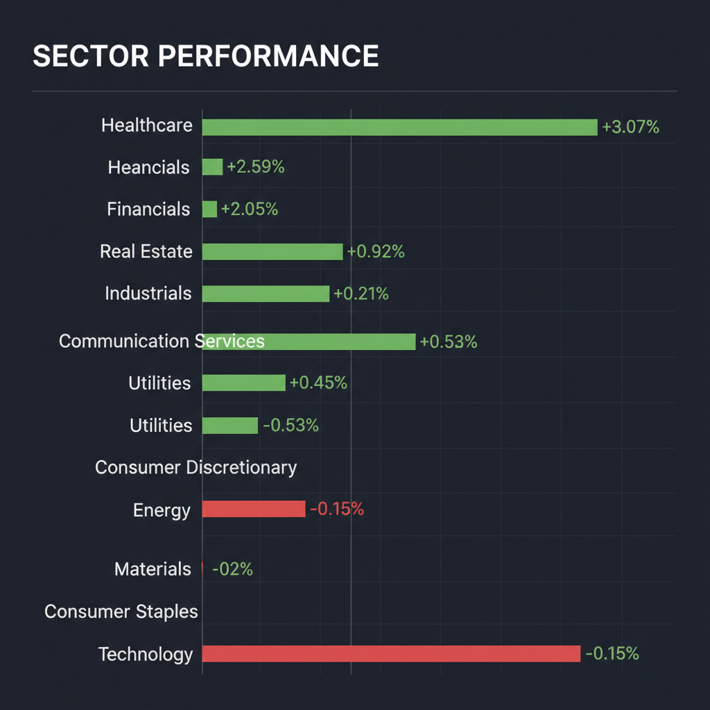
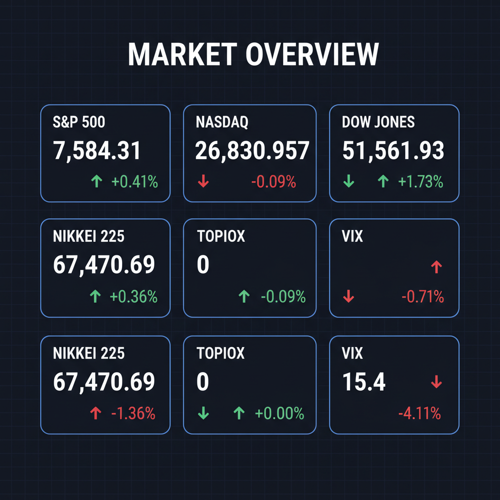

各エージェントがWeb調査結果を踏まえて独立に10段階評価した結果です。平均7以上=強気、4〜6.9=中立、4未満=弱気。
| 銘柄 | ファンダメンタルズアナリスト | テンバガーハンター | マクロエコノミスト | テクニカルストラテジスト | リスクマネージャー | 平均 | 判定 |
| 6254.T | 8 業績急拡大、半導体設備投資恩恵 | 9 半導体業界の成長波に乗り過去最高益更新 | 8 半導体復調で超純水需要拡大、業績急回復期待 | 8 過去最高益更新、半導体設備投資恩恵 | 8 業績急拡大、海外展開好調、割安 |
8.2 | 強気 |
| ServiceTitan | 8 SaaS成長、AI活用で収益改善期待 | 9 現場DXのリーダー、AIで収益性改善期待 | 8 現場DXとAIで成長期待、黒字化へ向かう | 8 高成長SaaS、AI収益化の転換点 | 7 AI活用で収益改善、成長性期待 |
8 | 強気 |
| XLV | 7 ディフェンシブ、ヘルスケア需要堅調 | 8 ディフェンシブで安定成長、ポートフォリオの柱 | 7 ディフェンシブ銘柄、インフレ・地政学リスクに強い | 7 ディフェンシブで安定成長、資金流入継続 | 7 ディフェンシブで安定成長、PER妥当 |
7.2 | 強気 |
| XLF | 7 割安感、金利上昇恩恵期待 | 8 割安感と利下げ期待で収益回復見込み | 6 金利低下期待、割安感あるが景気後退リスク | 7 割安感あり、金利低下で収益改善期待 | 6 割安感あり、利下げ期待で回復見込み |
6.8 | 中立 |
| 6758.T | 7 PS6期待、エンタメ事業好調 | 7 PS6への期待感と映像・画像センサー好調 | 7 PS6期待、エンタメ・半導体両輪で堅調 | 6 PS6期待で上昇、エンタメ事業の先行き | 6 PS6期待も株価調整、競争激化 |
6.6 | 中立 |
| 7203.T | 6 EV戦略転換、業績減益懸念 | 7 減益予想もEV・ハイブリッド戦略は強み | 5 減益見通し、EV戦略転換の行方を見極め | 6 円安で収益回復も、減益予想が重石 | 5 売上最高だが減益、EV転換が鍵 |
5.8 | 中立 |
| XLRE | 6 金利動向に注意、REITセクター底堅い | 6 金利高止まり懸念で短期的な上値は重い | 5 金利上昇懸念、底堅さもあるが大きな伸びは限定的 | 6 金利低下期待で不動産セクター見直し | 5 金利変動に敏感、セクター内差激しい |
5.6 | 中立 |
| CRWD | 4 AI関連だが期待先行、システム障害リスク | 7 AIセキュリティ需要で成長続くが割高感あり | 4 AIセキュリティ需要も割高感、システム障害リスク | 5 決算好調も割高感とシステム障害リスク | 4 AIセキュリティ需要も株価割高、訴訟リスク |
4.8 | 中立 |
| XLK | 4 AI期待先行、過熱感あり調整リスク | 5 AI過熱感の反動と集中リスクに警戒 | 3 AI調整、集中リスクと割高感、過熱感払拭に時間 | 4 AIバブル調整、集中リスクと割高感 | 3 過熱感強く、主要銘柄への集中リスク |
3.8 | 弱気 |
| SOUN | 4 AI関連だが赤字継続、財務リスク | 3 財務リスク高く、AI期待先行で割高感強い | 4 AI需要あるも累積赤字、財務リスク高い | 4 累積赤字大きく、投機的要素強い | 3 赤字先行、財務リスク高く投機的 |
3.6 | 弱気 |
| 8267 | 3 高負債、低収益性、株価低迷 | 4 財務リスクと競争激化で当面は様子見 | 3 高負債、業績減速懸念、株価下落トレンド | 3 高負債、減益懸念、株価下落トレンド | 2 高負債、減配リスク、低収益性 |
3 | 弱気 |
| AVGO | 3 AI関連だがガイダンス未達、割高感 | 4 AI期待先行でガイダンス未達は逆風 | 2 AI関連期待低下、ガイダンス未達で警戒強まる | 3 ガイダンス未達でAI期待剥落、警戒 | 2 AI期待先行、ガイダンス未達で警戒 |
2.8 | 弱気 |
エージェントが推奨した中小型株について、Google検索で最新情報を調査した結果です。
CrowdStrike Holdings, Inc.（CRWD）に関する最新情報は以下の通りです。
* 事業内容: CrowdStrikeは、テキサス州オースティンに本社を置くアメリカのサイバーセキュリティ技術企業です。エンドポイントセキュリティ、脅威インテリジェンス、サイバー攻撃対応サービスを提供しており、クラウドネイティブの「Falconプラットフォーム」を主力としています。AIを活用した保護、検知、対応に強みを持つEDR（Endpoint Detection and Response）やNGAV（Next-Generation Antivirus）などのソリューションを提供し、企業のエンドポイント、クラウドワークロード、ID、データを保護しています。 * 時価総額: 2026年6月現在、時価総額は約1,826.6億ドルから1,902.94億ドルです。 * 業界でのポジション: NASDAQに上場しており、NASDAQ 100およびS&P 500の構成銘柄です。サイバーセキュリティ分野におけるグローバルリーダーの一つとして認識されており、GartnerやForresterなどの国際的な評価機関から高い評価を得ています。
CrowdStrikeは2026年6月3日または4日に2027年度第1四半期（2026年2月～4月期）決算を発表しました。 * 売上高: 13.9億ドルで、前年同期比26%増となりました。これは市場予想の13.6億ドルを上回る結果です。サブスクリプション売上高は13.2億ドルで、26%増加しました。 * 利益: 調整後1株当たり利益（EPS）は1.10ドルで、市場予想の1.07ドルを上回りました。純利益は2,780万ドルとなり、前年同期の1億430万ドルの損失から黒字に転換しました。非GAAP粗利益率は78.7%、非GAAPサブスクリプション粗利益率は81%でした。 * 成長率: 年間経常収益（ARR）は55.1億ドルに達し、前年同期比で24%増加しました。純新規ARRは2億5,580万ドルで、32%増加しました。 * 今後の見通し: 2027年度第2四半期については、売上高を14.3億〜14.4億ドル、調整後EPSを1.16〜1.17ドルと予想しています。また、2027年度通期については、売上高を59.1億〜59.6億ドル、調整後EPSを4.88〜4.96ドルに上方修正しました。
* 好決算と株価の反応: 2027年度第1四半期決算は売上高、利益ともに市場予想を上回る好調な内容でしたが、決算発表後の株価は時間外取引で一時10%下落し、その後も下落しました。これは、決算前の株価が年初来で60%近く上昇しており、市場の高い期待に届かなかったことや、ガイダンスの伸びが期待よりも緩やかだったことが背景にあると分析されています。 * 株式分割の承認: 取締役会は1対4の株式分割を承認し、2026年7月2日から分割調整後の取引が開始される予定です。これにより、名目株価が下がり、株価がより手頃に見えることで、再び注目を集める可能性があります。 * AIセキュリティ需要の拡大: 同社はAI主導のサイバーセキュリティ需要が成長を牽引していると指摘しており、RBC証券やウェドブッシュ証券などのアナリストもAIの追い風を強調しています。 * 過去のシステム障害: 2024年7月19日には、同社のセキュリティソフトウェアの欠陥のあるアップデートにより、Microsoft Windowsマシンでブルースクリーンが発生し、世界的に大規模なコンピューター障害を引き起こしたことがあります。この件に関して、デルタ航空が5億ドル以上の損害賠償を請求していると報じられています。
* コンセンサス評価: 複数のアナリストによる評価では、「買い」または「強気買い」が多数を占めています。例えば、42人のアナリストのコンセンサスは「買い」で、そのうち40%が「強い買い」、43%が「買い」と評価しています。 * 平均目標株価: アナリストの12ヶ月の平均目標株価は情報源によって異なりますが、約502.69ドルから722.5ドルの範囲にあります。例えば、MarketBeatによると平均目標株価は674.35ドル、最高825.00ドル、最低368.00ドルです。 Quiver Quantitativeでは、過去6ヶ月の40人のアナリストの評価の中央値が722.5ドルです。 * 最近の目標株価引き上げ: 直近では、AI需要を背景にUBSが790ドル、Benchmarkが780ドル、DA Davidsonが780ドル、TD Cowenが700ドル、BMOが745ドル、キャンター・フィッツジェラルドが725ドルに目標株価を引き上げています。
* 競合の激化: サイバーセキュリティ市場は競争が激しく、利益率に圧力がかかる可能性があります。 * 規制・信頼性リスク: 2024年7月に発生したシステム障害は、同社のソフトウェアの信頼性に対する懸念を生じさせ、デルタ航空との間で損害賠償を巡る訴訟に発展しています。これにより、今後の規制や顧客関係に影響が出る可能性があります。 * 財務上の懸念: * 株価の割高感: 好決算にもかかわらず株価が下落した要因として、事前の株価上昇による期待値の高さと、現在の株価が割高であるとの見方が指摘されています。GuruFocusによると、現在の株価はGF Value™に対し51.1%割高と評価されています。 * 高いPER: 過去5年間のP/E中央値が690.03と非常に高く、投資家が高い成長期待を織り込んでいることを示しています。 * 株式ベース報酬費用: 多額の株式ベース報酬費用も、一部の投資家にとって懸念材料となる可能性があります。
* 決算発表後の下落: 2026年6月3日または4日の2027年度第1四半期決算発表後、好決算にもかかわらず、株価は時間外取引で下落し、日中取引でも約8%の下落となりました。これは、市場の期待が高すぎたこと、ガイダンスの伸びが期待よりも緩やかだったこと、および株価の割高感が主な理由とされています。 * 年初来の上昇: 株価は決算発表前まで、年初来で59%から60%近く上昇していました。これは、AIおよびサイバーセキュリティ需要拡大への期待が背景にありました。 * 株式分割の影響: 1対4の株式分割の発表は、短期的に株価をより手頃に見せる効果があり、今後の取引に影響を与える可能性があります。 * 現在の株価水準: 2026年6月4日現在、株価は716.41ドルから747.61ドルの範囲で取引されている情報が見られます。 52週高値は785.66ドルです。
XLV（ヘルスケア・セレクト・セクター SPDR ファンド）に関する最新の投資判断情報は以下の通りです。
純資産総額は、2025年末時点で約401億米ドル、または2026年2月末時点で6.6兆円に達する大規模なETFであり、経費率は0.08%と低コストです。セクターETFの中でも特に規模が大きく、流動性も高いため、個人投資家から機関投資家まで幅広く利用されています。
運用実績（2026年2月末時点、米ドルベース、配当込み市場価格リターン）: * 年初来: +3.5% * 1ヶ月: +3.5% * 3ヶ月: +2.1% * 6ヶ月: +17.1% * 1年: +9% * 3年（年率平均）: +9.8% * 5年（年率平均）: +8.9% * 10年（年率平均）: +10.7%
2025年の年初来では約1%の下落を記録しましたが（2025年9月25日時点）、長期的に見ると堅調な成長を示しています。
分配金: 配当利回りは約1.6%（2025年後半）で、年4回（3月、6月、9月、12月）決算・配当が行われます。
「XLF」（State Street Financial Select Sector SPDR ETF）は、米国の金融セクターに特化した上場投資信託（ETF）であり、S&P 500指数を構成する金融関連企業に連動することを目指しています。米国経済の健全性を測る重要なバロメーターとして注目されています。
* 事業内容: XLFは、S&P 500指数の金融セクターを効果的に代表することを目的とした「金融セレクト・セクター指数」に連動するETFです。銀行、保険、資本市場、モーゲージ不動産投資信託（REIT）、消費者金融などの業種に属する米国企業に投資を行います。レプリケーション手法は現物型で、運用スタイルはパッシブ、加重方式は時価総額です。 * 運用資産残高（AUM）: 約493.9億米ドル（2026年6月1日現在）。 * 業界でのポジション: 米国市場を代表する金融セクターのETFであり、投資家は米国経済の健全性を測る上でXLFを重要な指標の一つとしています。 上位構成銘柄には、バークシャー・ハサウェイ（BRK.B）、JPモルガン・チェース（JPM）、ビザ（V）、マスターカード（MA）などが含まれ、ポートフォリオの大部分を占めています。
XLFはETFであるため、一般的な企業の売上や利益といった決算情報ではなく、ファンドとしての運用実績が評価対象となります。
* 経費率: 0.08%と非常に低コストで運用されています。 * 配当利回り: 年間配当0.79ドルに基づき、1.54%です。 直近の配当は2026年3月25日に0.25ドルが支払われ、その前の四半期からは24.14%増加しました。 配当は四半期に1回支払われます。 * 運用資産残高（AUM）の推移: 約493.9億米ドルですが、過去1ヶ月で6.38%減少しました。 * ファンドフロー（1年間）: 約-9.3576億米ドルです。 * 株価パフォーマンス: 2026年5月30日現在の1年リターンは2.78%、ボラティリティは14.37%です。
* 2026年6月3日（水）のS&P500指数は、中東情勢の緊迫化によるリスク回避姿勢が強まり下落しました。この中で、金融セクターは-1.21%の下落を記録し、情報技術セクターに次いで下落幅が大きいセクターの一つとなりました。 * 野村證券の2026年6月4日付のレポートでは、イラン情勢はいずれ収束し、米連邦準備制度理事会（FRB）が年内に2回の利下げを実施すると予想しています。PERが14倍前後まで低下した金融セクターは、割安感に着目した評価が入りやすいとして注目されています。 * マネックス証券が2026年5月下旬に翻訳・公開したシュローダー・グローバル市場見通し（原版は2026年5月上旬作成）によると、株式市場全体の見通しは強気を維持しており、市場のリターンが一部の銘柄だけでなく広範に拡大する可能性があり、これは金融セクターにとって朗報であると指摘されています。
XLF自体に個別の目標株価は設定されていませんが、金融セクター全般に対する見通しは以下の通りです。
* 野村證券は、PERが14倍前後まで低下した金融セクターに注目し、割安感があるとしています。 * アライアンス・バーンスタインは、2024年5月28日時点で、銀行システムは安定しており、主要銀行が規制上の最低要件を上回る超過資本を保有していることから、優良な金融株が上昇する明るい環境が整いつつあると見ています。
* 金利政策: 米国連邦準備制度理事会（FRB）の金利政策に極めて敏感です。一般的に、金利が上昇すると銀行の貸出利ざや（NIM）が拡大し収益性が向上する傾向がありますが、急速な利下げやゼロ金利政策は金融機関の収益を圧迫する要因となります。 * 規制リスク: 金融規制の変更は、金融セクターに直接的な影響を与えるリスク要因です。 * 信用リスク: 特定の金融機関の破綻が連鎖的な信用不安を引き起こす「システミック・リスク」は、XLFのような金融セクターETFにおける固有のリスクです。 商業用不動産業界の苦境やニューヨーク・コミュニティ・バンクの破綻など、依然としてぜい弱性への警戒が必要です。 * 地政学的リスク: 地政学的な緊張や市場の混乱は、金融セクター全体に影響を及ぼす可能性があります。 直近では中東情勢の緊迫化が市場全体、特に金融セクターの下落要因となりました。
* 2026年6月3日時点で、XLFの株価は52.21ドルで取引されています。 * 2026年6月3日（水）は、中東情勢の緊迫化によるリスク回避の動きから、金融セクターは1.21%下落しました。 * XLFの純資産価値（NAV）は50.83ドルで、過去1ヶ月で2.12%下落しています。 * 中期的には、2023年11月から2024年3月にかけてS&P 500金融株指数は30.4%上昇し、同期間のS&P 500指数の上昇率（25.2%）を上回りました。 しかし、運用資産残高（AUM）が過去1ヶ月で減少している点には注意が必要です。
XLRE（State Street Real Estate Select Sector SPDR Fund）に関する投資判断に必要な最新情報は以下の通りです。
1. 企業概要（事業内容、時価総額、業界でのポジション） XLREは、S&P 500指数の不動産セクター（モーゲージREITを除く）の価格および利回りパフォーマンスに概ね連動する投資成果を目指す上場投資信託（ETF）です。主に不動産管理・開発会社や、産業用、オフィス、小売、住宅、ヘルスケア、専門型REITなど、多様な種類のREITに投資します。 時価総額は、2026年6月時点でおよそ78億ドルから138.7億ドルの範囲です。S&P 500の不動産セクターに特化しており、大型の不動産企業に集中投資する点が特徴で、経費率は0.08%から0.09%と低く設定されています。
2. 直近の業績・決算情報（売上、利益、成長率） ETFであるため、企業のような個別の売上や利益の決算情報はありません。ファンドとしてのパフォーマンスと分配金利回りが指標となります。 直近の分配金利回りは、年間2.5%から3.22%の範囲で推移しています。2026年5月29日時点の年間パフォーマンスは4.19%の増加、年初来では約10.87%上昇し、市場全体をアウトパフォームしています。経費率は0.08%。
3. 最新ニュース・材料（直近1-2週間の重要なニュース） 2026年6月3日、XLREはプレマーケット取引で上昇しており、Nareit REITweekカンファレンスでのREITセクターの好調な勢いが継続しています。主要構成銘柄であるPrologisは記録的なリース活動を報告し、データセンター契約が新規取引の10%を占めました。Crown CastleのCEOは、ファイバー事業の売却後、有機的成長計画を概説しています。一方、トップホールディングのWelltowerは、金利高止まりへの懸念から売却圧力に直面しています。
4. アナリスト評価・目標株価（あれば） XLREの構成銘柄（32銘柄）に対するアナリストのコンセンサス評価は「Moderate Buy（中程度の買い）」で、25の買い、7のホールド、0の売りの評価があります。構成銘柄25社（ポートフォリオの93.4%を占める）の集計目標株価は43.99ドルです。 一方で、一部の予測では、XLREの30日間の株価予測は平均で39.61ドルと、現在の株価から約10%の下落を示唆しています。別のSell-Side Consensusによると、XLREの目標株価は48.07ドルで、現在の価格から9.3%の上昇を見込んでいます。
5. リスク要因（競合、規制、財務上の懸念） * 金利変動への感応度: REITに投資するため、金利変動に敏感です。金利上昇局面では、借り入れコストの増大懸念から株価が調整される可能性があります。 * 市場のボラティリティ: 株式市場全体のボラティリティに影響を受けやすく、最大ドローダウンは-38.83%を記録したことがあります。 * セクター集中リスク・分散の限定性: S&P 500の不動産セクターに限定されているため、分散が限定的です。上位10銘柄でポートフォリオの約60%を占めるなど、集中度が高い傾向があります。 * 景気循環への脆弱性: 不動産市場のサイクルや経済状況の影響を受けやすいです。 * 地政学的・経済的リスク: 貿易摩擦や戦争などの地政学的リスク、経済的リスクにさらされる可能性があります。
6. 株価の最近の動き（直近のトレンド） XLREの株価は、2026年6月3日時点でプレマーケットでわずかに上昇しており、Nareit REITweekカンファレンスでのREITセクターの好調な勢いを背景にしています。2026年の年初来では約10.87%上昇し、市場全体をアウトパフォームしており、直近の1週間ではテクノロジーやエネルギーセクターをも上回る3%の上昇を見せました。 現在の株価（2026年6月4日）は43.93ドルであり、52週高値（44.98ドルまたは44.99ドル）に近づく一方で、52週安値（39.73ドル）を上回る水準で推移しています。
XLK (Technology Select Sector SPDR Fund)に関する投資判断に必要な最新情報を以下に簡潔にまとめます。
2026年6月3日時点の純資産総額（AUM）は約1275.3億ドルから1291.1億ドルで、テクノロジー分野のETFとしては最大級の規模を誇ります。 業界におけるポジションとしては、S&P 500の情報技術セクターへの集中投資を可能にする商品として知られています。特にApple、Microsoft、NVIDIAなどの少数の超大型テクノロジー企業への集中度が高いのが特徴です。 ただし、Amazon、Google（Alphabet）、MetaなどはGICS（Global Industry Classification Standard）分類上、情報技術セクターではないためXLKには含まれていません。
AVGO（Broadcom Inc.）に関する最新の投資判断情報は以下の通りです。
1. 企業概要 ブロードコム（Broadcom Inc.）は、半導体ソリューションとインフラストラクチャソフトウェアソリューションの設計、開発、提供を行うグローバルなテクノロジー企業です。半導体ソリューション事業には、データセンター向けネットワーク半導体、カスタムAIアクセラレータ（ASIC）、無線通信・ブロードバンド向け半導体製品などが含まれます。インフラソフトウェア事業では、プライベート/ハイブリッドクラウド、アプリケーション開発・提供、サイバーセキュリティソリューションなどを手掛けています。 時価総額は約1.9兆ドルから2.2兆ドル規模であり、世界トップクラスの半導体企業の一つです。業界でのポジションとしては、AIデータセンターの「配管・骨格・カスタム頭脳」を供給する重要な役割を担っており、特にAIインフラ分野で強力な地位を確立しています。ネットワーキング事業では、スイッチングやルーティング用途で業界最上位に位置づけられています。
2. 直近の業績・決算情報 ブロードコムは、2026会計年度第2四半期（2026年5月5日終了）の決算を2026年6月12日に発表しました。売上高は前年同期比43%増の125億ドルに達し、VMwareを除く売上高も前年比12%増を記録しました。1株当たり利益（EPS）は予想を上回る2.44ドルでした。AI半導体売上高は前年同期比280%増の31億ドルと急増し、半導体収益の周期的な低迷を相殺する結果となりました。 2026会計年度第2四半期調整後売上高は221.9億ドル（前年同期比約48%増）で、過去最高を更新しました。非GAAP調整後1株当たり利益（EPS）は2.44ドル（前年同期比54%増）でした。
3. 最新ニュース・材料 直近では、2026年6月3日引け後に発表された2026年度第2四半期決算と、それに対する市場の反応が最も重要なニュースです。売上高と1株当たり利益は市場予想をわずかに上回ったものの、市場が注目していた第3四半期のAI半導体売上高見通しが160億ドルと、アナリスト予想（163.6億ドル）に届かなかったことが嫌気され、決算発表後の時間外取引で株価が10%超急落しました。これにより、一時的に時価総額が約3,200億ドル消失するという「歴史的急落」に見舞われました。この急落は、AI銘柄に対する市場の過度な期待が背景にあると指摘されています。 また、1株につき10株の株式分割が発表され、分割調整後の取引開始は2024年7月15日を予定しています。
4. アナリスト評価・目標株価 ブロードコムに対するアナリストのコンセンサスは「強い買い」です。44人のアナリストのうち43人が買いを推奨し、3人が中立、0人が売りを推奨しています。 平均目標株価は、27人のアナリスト評価に基づき472ドルです。みんかぶ米国株によると、アナリストの平均目標株価は486.85ドルで、株価はあと1.1％上昇すると予想されています。最近では、モルガン・スタンレーが目標株価を485ドルから502ドルに引き上げ「オーバーウェイト」を維持し、BNPパリバ エクサンは目標株価を600ドルから640ドルに引き上げ「アウトパフォーム」を維持しています。バーンスタインも目標株価を550ドルに引き上げています。一方、マッコーリーはGoogleの半導体開発の内製化へのシフト懸念から、評価を「アウトパフォーム」から「ニュートラル」に格下げしました。
5. リスク要因 主なリスク要因としては、以下の点が挙げられます。 * 競合: AI半導体分野では、GoogleがカスタムTPUの設計の一部をMediaTekに発注するなど、競合の脅威に直面しています。MediaTekは低価格で推論ワークロードに注力しており、Broadcomの市場シェアに影響を与える可能性があります。ネットワーク部門では、NVIDIAがInfiniBandアーキテクチャを推進しており、Broadcomのイーサネットプロトコルと競合しています。 * 顧客集中リスク: Apple向け比率が高いことは顧客集中リスクを伴う可能性があります。 * バリュエーション: AI関連売上の急成長を前提とした高いバリュエーションのため、需要鈍化時には株価調整幅が大きくなる可能性があります。ブロードコムの将来利益は約43倍で、過去の平均を大幅に上回っています。 * VMware事業: VMware事業においては、顧客が技術革新を伴わない値上げに不満を募らせているとの指摘もあります。
6. 株価の最近の動き ブロードコムの株価は、AIブームを背景に年初来で38%上昇し、決算発表前には過去最高値圏で取引されていました。しかし、2026会計年度第2四半期決算発表後の6月4日、第3四半期のAI半導体売上高見通しが市場予想に届かなかったことを受け、株価は一時16%急落しました。この下落は、市場がAI勝者に対して非常に高い期待を抱いており、期待を下回る情報が急激な調整を引き起こす可能性を示唆しています。現在、株価は大幅安となっており、半導体セクター全体の軟調な動きを牽引しています。
イオン（銘柄コード: 8267）に関する投資判断に必要な最新情報は以下の通りです。
ServiceTitanに関する投資判断に必要な最新情報は以下の通りです。
1. 企業概要 ServiceTitan, Inc.は、2007年にカリフォルニア州グレンデールで設立されたアメリカのクラウドベースのソフトウェア企業です。 配管、空調、電気工事などの住宅設備修理・管理業者を含む、現場サービス業者向けのCRM（顧客関係管理）、現場サービス管理、企業資源計画（ERP）、人事管理、フィンテックなどを網羅するエンドツーエンドの技術プラットフォームを提供しています。 特に、AIを活用した「Titan Intelligence」や決済ソリューション「ST Payments」なども提供し、業界のDX（デジタルトランスフォーメーション）を支援しています。 住宅サービスの修理・管理市場は1兆ドル規模とされ、同社はこの市場において、これまでテクノロジーが十分に活用されていなかった中小企業向けに特化したサービスを提供することで、競争上の優位性を築いています。 2024年12月12日にNASDAQに「TTAN」のティッカーシンボルで上場し、発行価格71ドルで約6億2,500万ドルを調達しました。初日の株価は42%上昇し、約89億ドルの評価額となりました。 2026年6月2日時点の時価総額は70億ドルです。
2. 直近の業績・決算情報 ServiceTitanは、堅調な売上成長を続けています。 * 売上高: * 2026会計年度（1月31日終了）の年間売上高は9億6,100万ドルで、前年比24.5%増となりました。 * 2027会計年度第1四半期（4月30日終了）の売上高は2億6,880万ドルで、アナリスト予想の2億5,670万ドルを上回り、前年同期比25%増加しました。 * 利益: * 2027会計年度第1四半期の調整後1株当たり損失は0.24ドルで、アナリスト予想の0.29ドル損失を上回る結果となりました。 * 調整後営業利益は4,080万ドルに達し、前年同期の1,620万ドルから大幅に改善、調整後営業利益率は15.2%に拡大しました。 * 2026会計年度第4四半期（2026年1月31日終了）のEPSは0.27ドルで、予想の0.18ドルを上回りました。 * 現在、同社は純損失を計上していますが、アナリストは2026年中に黒字化すると予測しています。 * 成長率: プラットフォームを通じた総取引額（Gross Transaction Volume）は前年同期比23%増の217億ドルに達しました。
3. 最新ニュース・材料（直近1-2週間の重要なニュース） * 2026年6月4日: ServiceTitanは、2027会計年度第1四半期決算を発表し、アナリスト予想を上回る売上高と調整後1株当たり損失の改善を示しました。これを受けて株価は12.5%急騰しました。同社は、第2四半期の売上高ガイダンスを2億8,400万ドル～2億8,600万ドル、2027会計年度通期の売上高を11億3,000万ドル～11億4,000万ドルと見込んでいます。 * 2026年5月26日: TD CowenはServiceTitanの目標株価を135ドルから110ドルに引き下げましたが、「買い」推奨は維持しました。 * 2026年5月20日: BTIGはServiceTitanの目標株価を105ドルから90ドルに引き下げましたが、「買い」推奨を維持しました。 * AIを活用したコールセンター自動化ツール「バーチャルエージェント」や「Maxプログラム」の導入が進められており、顧客からの初期フィードバックは良好で、収益拡大の重要なドライバーになると期待されています。
4. アナリスト評価・目標株価 ServiceTitanに対するアナリストのコンセンサス評価は「買い」です。 * 16人のアナリストによる平均目標株価は99.75ドルで、現在の株価（約72.63ドル）から37.34%の上昇余地を示唆しています。予測範囲は67ドルから125ドルです。 * 他の情報源では、21人のアナリストに基づくコンセンサス目標株価は115.11ドル（高値155ドル、安値84ドル）、またはMarketBeatのコンセンサス目標株価は107.80ドルと報告されています。
5. リスク要因 * 競合: Housecall Pro, Jobber, Workizなどの競合他社が存在します。 * 財務状況: 現在は赤字であり、アナリストは黒字化を予測していますが、その達成には不確実性があります。 * 市場の評価: Price-To-Sales比率（7.4倍）は、米国のソフトウェア業界平均（3.9倍）と比較して割高と評価されています。 * 株価の変動: 過去1年間で株価は48%下落しており、52週高値から37%下落しています。
6. 株価の最近の動き ServiceTitan（TTAN）は2024年12月12日にNASDAQに上場しました。 2026年3月16日には、好調な第4四半期決算にもかかわらず、通期ガイダンスがアナリストの期待に届かなかったため、株価は6%下落しました。 しかし、本日（2026年6月4日）発表された2027会計年度第1四半期の好調な決算と前向きな業績見通しを受けて、株価は12.5%急騰しました。
6758.T（ソニーグループ株式会社）に関する投資判断に必要な最新情報は以下の通りです。
1. 企業概要 ソニーグループ株式会社（6758.T）は、AV機器大手であり、ゲーム、音楽、映画のエンタテインメント事業を主力としています。また、画像センサー分野で世界トップシェアを誇ります。その事業内容は、コンピューター、電話、家庭用電気製品など多岐にわたるテクノロジー企業としての側面も持ち合わせています。時価総額は、2026年6月4日時点で19兆4,415億7,000万円です。
2. 直近の業績・決算情報 ソニーグループの最新の本決算は2026年5月8日に発表されました。2027年3月期の連結業績予想では、売上収益が12兆3,000億円、営業利益が1兆6,000億円、親会社の所有者に帰属する当期純利益が1兆1,600億円と、増収増益を見込んでいます。
3. 最新ニュース・材料（直近1-2週間） 直近の重要なニュースとして、次世代ゲーム機「PlayStation 6」の高価格設定観測を受け、株価が上昇したことが報じられています（2026年6月4日時点）。
4. アナリスト評価・目標株価 23人のアナリストによるソニーグループのコンセンサス評価は「強い買い」です。アナリストのうち21人が買い、2人が保持を推奨しており、売り推奨のアナリストはいません。アナリストの平均目標株価は4,723.13円であり、最高で5,900.00円、最低で3,500.00円と予想されています。平均目標株価によれば、ソニーグループには約32.62%の上昇余地がある可能性があります。
5. リスク要因 電子部品業界全体と同様に、ソニーグループも激しい競争、需要変動、価格競争、技術革新のリスクに常に直面しています。特に、ゲームおよびエンタテインメント市場、ならびに画像センサー市場における競合は主要なリスク要因です。また、グローバル企業であるため、為替変動も業績に影響を与える可能性があります。
6. 株価の最近の動き ソニーグループの株価は、2026年6月4日の終値で3,540.0円でした。前日比では-79.0円（-2.18%）と反落しました。直近のトレンドとしては、1週間で+2.6%、1カ月で+13.2%、3カ月で+4.5%の上昇を示しています。過去52週間の高値は2025年11月13日の4,776.0円、安値は2025年6月23日の2,774.2円です。
7203.T（トヨタ自動車株式会社）に関する投資判断に必要な最新情報は以下の通りです。
2026年6月4日現在、時価総額は約44兆8,341億円で、日本企業の中で首位を占めています。自動車業界におけるポジションとしては、国内乗用車市場の約半数（シェア49%）を占め、圧倒的な存在感を示しています。グループ会社にはダイハツ工業、日野自動車があり、SUBARUの筆頭株主でもあります。高い生産効率を誇る「トヨタ生産方式」と徹底した品質管理が強みとされています。
2027年3月期の業績予想では、営業収益51兆円、営業利益3兆円を見込んでいます。
銘柄コード6254.Tの野村マイクロ・サイエンスに関する投資判断に必要な最新情報は以下の通りです。
1. 企業概要 野村マイクロ・サイエンス株式会社は、超純水製造装置専業メーカーです。半導体工場を中核に、FPD（フラットパネルディスプレイ）や製薬工場向けの超純水製造装置、超高純度薬品、機能水製造装置、特殊工場排水処理装置、有価物回収装置の設計・施工・販売および保守を手掛けています。超微量分析技術をコアとしています。海外展開に積極的で、韓国、台湾、中国、アメリカでの海外事業売上が全体の約70%を占めています。主要取引先にはSAMSUNG AUSTIN SEMICONDUCTORなどがあります。 時価総額は1,809億円（2026年6月4日時点）です。 業界内では、超純水装置大手として、半導体・製薬向けに強みを持ち、国内トップクラスのシェアを有しています。
2. 直近の業績・決算情報 2026年3月期の連結経常利益は56.2億円で、前の期比58.0％減となりましたが、2027年3月期は連結経常利益が前期比2.7倍の150億円に急拡大し、2期ぶりに過去最高益を更新する見通しです。 今期の売上高は72%増、最終利益は191%増を計画しています。 また、2026年4月から9月期（中間期）の連結業績見通しでは、営業利益は前年同期比25.8%増の36億円、売上高は36.9%増の345億円、経常利益は28.6%増の26.5億円、純利益は38.8%増の19.6億円を見込んでいます。
3. 最新ニュース・材料 2026年5月14日に発表された2026年3月期の決算では、前期は減益となったものの、2027年3月期に過去最高益を更新する見通しが示されました。同時に、前期の年間配当を増額し、今期も増配する方針を発表しています。 この決算発表を受け、5月15日には株価が一時13.66%上昇しました。
4. アナリスト評価・目標株価 アナリストからは「強気買い」または「買い」の評価が主流です。 米系大手証券は2026年5月15日に、同社のレーティングを「強気（買い）」に据え置き、目標株価を5,300円に引き上げています。
5. リスク要因 * 設備投資サイクルの変動: 半導体業界の設備投資動向に業績が大きく影響を受ける景気敏感株であり、顧客の投資計画の変動が受注、売上、稼働率に影響を与える可能性があります。 * 地政学的リスク・通商政策: グローバルに事業を展開しているため、地政学的リスクや通商政策、特に先端半導体・装置の対中輸出規制、関税率の引き上げなどが販売地域や取引条件に影響を及ぼす可能性があります。 * 財務上の懸念: 有利子負債倍率が134.80%であり、純資産に対して有利子負債が大きい点も考慮すべきです。
6. 株価の最近の動き 株価は2026年5月25日に年初来高値5,290円を記録しました。 しかし、その後は調整局面に入り、5月28日の4,725円から6月4日の4,455円へと下落しています。 5月29日から6月2日にかけては、株価が4,590円から4,360円へと5.53%下落し、この下落局面で出来高が増加しました。 直近20日前比では+9.46%上昇していますが、直近5日前比では-5.71%下落しています。
SoundHound AI (SOUN)に関する投資判断に必要な最新情報を以下にまとめます。
SoundHound AIは、会話型AIプラットフォームを提供する米国のテクノロジー企業です。 同社は独自開発の音声AIプラットフォーム「Houndify」を基盤に、自動車、レストラン、IoTデバイス、エンタープライズ顧客サービスなど多様な業界へソリューションを提供しています。 主な事業は、自動車メーカーやIoT機器メーカーへのライセンス提供によるロイヤリティ収入と、レストランの自動注文システムや企業のコンタクトセンター向け対話型AIソリューション提供によるサブスクリプション収入の3本柱で構成されています。 時価総額は2026年6月4日時点で約34.4億ドルから35.57億ドルです。
業界におけるポジションとしては、GoogleやAmazonのような巨大テック企業のエコシステムに依存しない独立したAIプラットフォームを提供している点が最大の差別化要因です。 独自の「Speech-to-Meaning®」技術により、音声を直接意味に変換することで、競合より最大35%高い認識精度と4倍の応答速度を実現しているとされています。
SoundHound AIが2026年5月8日に発表した2026年第1四半期（3月31日終了）の決算では、売上高が4,420万ドルとなり、市場予想の4,256万ドルを上回りました。 前年同期比では52%の増収を記録しています。 一株当たり損失（EPS）は-0.06ドルで、予想の-0.10ドルよりも良好な結果となりました。
2025年度通期の売上高は1億6,892万ドルを記録し、過去最高となりました。 しかし、同社は設立以来毎年継続的な損失を計上しており、2026年3月31日時点での累積赤字は9億8,210万ドルに達しています。 経営陣は2026年末までにEBITDAベースでの損益分岐点達成を目標に掲げています。 2026年度通期の売上高は2億2,500万ドルから2億6,000万ドル（前年比33%から54%増）と見込まれています。
2026年5月8日に発表された2026年第1四半期決算では、EPSと売上高が市場予想を上回ったことで株価が上昇しました。 しかし、その後株価は低迷傾向にあり、過去6ヶ月間で25%以上下落しているとの報道もあります。 ソフトウェア企業の株価は、バリュエーション懸念や既存企業がAIプラットフォームを収益化できるかという疑問が続く中で、市場センチメントの微妙さの影響を受けている可能性があります。
アナリストのSoundHound AIに対するコンセンサスは「強い買い（Strong Buy）」または「強気買い」です。 TradingViewによると、過去3ヶ月にわたる10人のアナリストの評価では、大部分が強い買いトレンドを支持しています。
みんかぶの目標株価は2026年6月2日時点で12.39ドルで「買い」と評価されており、AI株価診断も「割安」と判断されています。 証券アナリストの平均目標株価は14.0ドルで、現在の株価から約58.73％上昇すると予想されています（2026年6月3日時点）。 一方、H.C. Wainwrightはバリュエーション圧力を理由に目標株価を20ドルに引き下げています（2026年3月2日時点）。 D.A. Davidsonは目標株価14ドル、Wedbushは目標株価12ドルで「買い」レーティングを維持しています。
* 財務上の懸念: SoundHound AIは設立以来継続的な損失を計上しており、2026年3月31日時点で累積赤字は9億8,210万ドルに達しています。今後も大幅な損失が続くと予想されており、負の営業キャッシュフローが継続している点は懸念材料です。 * 競合: 音声AI市場には、自動車向けAIのCerenceやエンタープライズAIのC3.aiといった競合が存在します。 また、Googleアシスタント、Siri、Amazon Alexaなどの巨大テック企業の汎用AIとも競争しており、技術開発やマーケティングに多額の投資が必要となる可能性があります。 * 特定の顧客への依存: 収益の一部が特定の大口顧客に依存しており、未請求の売掛金の大部分が特定の顧客に集中していることが財務の安定性に影響を与える可能性があります。 * バリュエーション: 高い評価倍率（2025年10月6日時点でのP/Sレシオ約56.6、P/Bレシオ20.69）が懸念点として指摘されています。 * 規制・経済環境: 経済環境の変動や規制の変更が業績に影響を与えるリスクも考慮する必要があります。 * インサイダー動向: 2025年9月には複数の幹部が株式を売却しています。 * その他: CFOの交代や集団訴訟といった懸念材料も報告されています。
SoundHound AIの株価は、2024年後半の高値から50%下落しているものの、過去12ヶ月では100%以上上昇しています。 2026年第1四半期決算発表を控えた4月には、高い空売り比率によるショートスクイズ（踏み上げ）発生への思惑から株価が急騰しました。 しかし、直近のトレンドとしては低迷が見られ、2026年6月4日時点でのTradingViewのデータによると、直近1ヶ月で-15.03%、6ヶ月で-35.80%、年初来で-20.89%の下落となっています。 2026年6月4日の約定価格は8.06ドルです。